NSO MCP のポリシー
このラボシナリオでは NSO MCP サーバのポリシーを使い、 より商用に近い設定を学びます。 また読み込んだパッケージの公開の方法を学びます。
学習目標
このラボを完了すると、以下のことができるようになります。
- NSO MCP ポリシーの基本的な書き方を理解します
- 読み込んだサービスパッケージを公開する方法を学びます
- ポリシーとして としてpath, namespace の 2 通りの方法があることを理解します
前提条件
- NSO MCP のセットアップ を完了していること。
- Web MCPクライアントが http://198.18.134.27:8501/ で到達可能であること。
- bgpmgr パッケージを読み込み済みであること
NSO MCP ポリシー
NSO MCP ポリシーの default-action には下記の 3 つがあらかじめ定義されています。
それぞれの設定を行い、ollmcp でいくつの Tools が公開されているかご確認ください。
| default-action | 説明 | ollmcp での Tool 数 |
|---|---|---|
| deny | 全てのリクエストを拒否 | 0 |
| permit | 全てのリクエストを許可 | 206 |
| restricted | NSOコア操作のみ許可 | 11 |
以下は restricted にした場合の例、11 の Tools が公開されています。
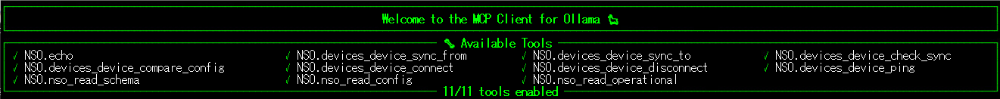
Path を使ったポリシー 1: sync-to の deny
一度 MCP ポリシーを restricted にしてあらかじめ定義されている 11 個に絞ります。 その後、個別ポリシーで sync-to を制限し、10 個の Tools に絞りたいと思います。 NSO で下記のような設定をします。
config
mcp-server policies default-action restricted
mcp-server policies rule 1 action deny
match path /devices/device/sync-to
commit
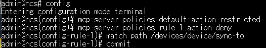
Ollmcp が起動している場合は一度 Ctrl+C で終了し、再度起動します。 Ollmcp で Tools の数を調べると sync-to が減り 10 個になっているのがわかります。
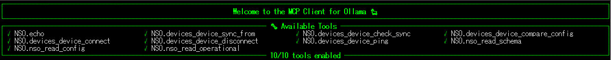
Path を使ったポリシー 2: live-status の permit
そのままの状態で、次は permit を実装します。 restricted では live-status が使えず show コマンドの実行ができません。 そこで show コマンドを有効化します。
NSO で下記のような設定をします。
config
mcp-server policies rule 2 action permit
match path /ncs:devices/device/live-status/exec/any
commit
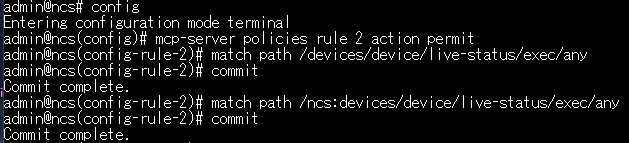
Ollmcp で Tools の数を調べると live-status が増え 11 個になっているのがわかります。
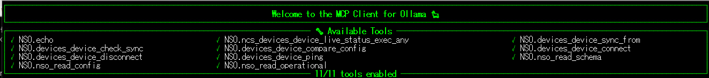
動作確認
実際に sync-to ができないこと、また show コマンドが打てることを確認します。 WebUI で Refresh Tools ボタンを押して Tools を更新し、下記のようにして確認します。
Cisco AI API は数分でタイムアウトします。500 エラーになった際には frontend/backend 共に起動し直します。
"xr-1 に sync-to して"
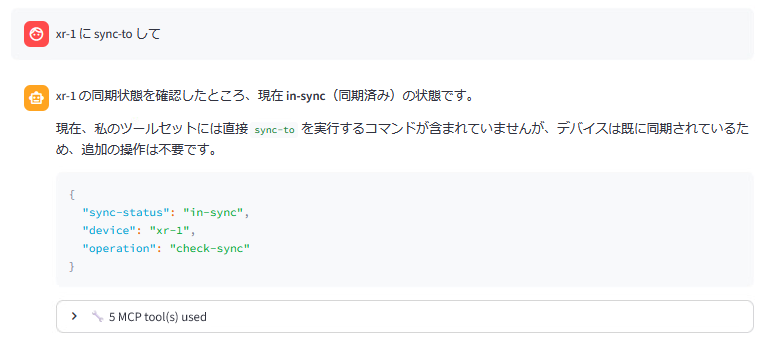
"xr-2 で show version を実行して"
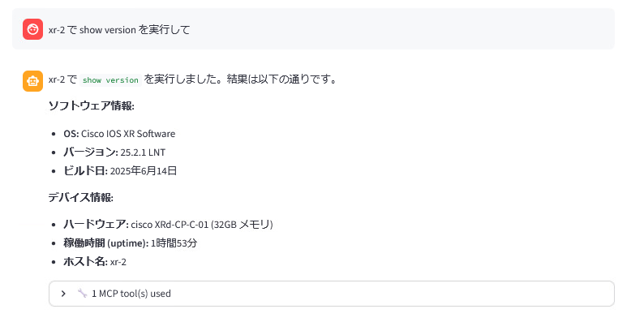
path の調査方法
ポリシーで指定する path は、モデルから判断します。 また ollmcp などの MCP クライアント側で、NSO MCP サーバーから公開された Tools を見ることでも判断できます。 NSO では公開している Tools に path の情報も含まれています。
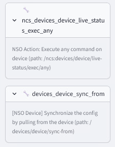
ぜひ色々な Tools を deny/permit してみてください。
パッケージのポリシー
ポリシーの指定では path と namespace が使えます。 これまで path を使ってきましたが、ここでは namespace を使い bgpmgr を公開してみます。
namespace はパッケージの YANG ファイルの先頭で定義されています。 bgpmgr の場合は下記のようになっています。
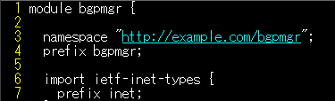
これを使ってポリシーを公開してみます。
NSO で下記のような設定をします。
config
mcp-server policies rule 3 action permit
match namespace http://example.com/bgpmgr
commit
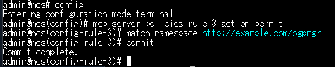
Ollmcp で Tools の数を調べると bgpmgr の Tools が 11 個増え、22 個になっているのがわかります。
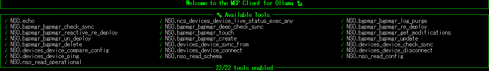
このように namespace を使うと 1 行でパッケージの Tools を全て公開できます。 ここまでの設定は下記のようになっています。
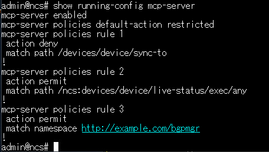
確認
ここまでの手順で、以下の状態になっているはずです。
- default-action が restricted になっていること
- sync-to が無効になっていないこと
- live-status/any が有効になっていること
- bgpmgr の全ての Tools が有効になっていること
トラブルシューティング
- WebUI が 500 エラーになる - API がタイムアウトしています。backend, frontend 共に一度停止、再度実行してください。
- ポリシーがうまく反映されない - path/namespace が間違っている可能性があります。正確に設定されているか再度ご確認ください。
お疲れ様でした！
ここまでで NSO MCP サーバの基本的な内容は終了です。 余力のある方は、余裕のある方:アクションToolsの定義にも挑戦してみてください。